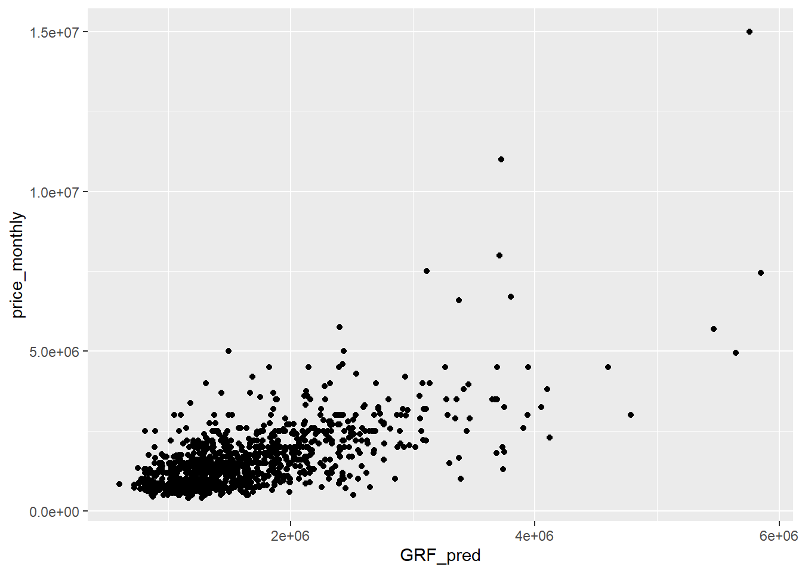

pacman::p_load(tidyverse, tmap, sf, spdep, GWmodel, SpatialML, rsample, tidymodels, gtsummary, rpart, rpart.plot, ggstatsplot, performance, geosphere, stringr, matrixStats)Take Home Exercise 3: Geographically Weighted Predictive Models
Introduction
In this Take Home Exercise 3, we will be doing a geographically weighted predictive models on rental units in Jakarta. This is a prototype of one of the feature of my IS415 Geospatial Analytics and Applications Project.
Importing of Packages
The packages that I am using for this exercise are used in the class’ In-Class Exercise 9.
Data
Geospatial Data
-
This dataset is taken from the Indonesia Geospasial website
It is divided based on the different administrative cities in Jakarta, consisting of the POIs available in each city.
Aspatial Data
-
- This dataset is scraped from Mamikos website
- The dataset consists of rental units in Jakarta and the facilities provided in each rental unit
School and University dataset in Jakarta
- This dataset is scraped from Indonesia’s Ministry of Education and Culture (Kemendikbud) website
Data Preprocessing
Jakarta Map
First, we need to combine the shapefiles of each administrative ‘desa’ in Jakarta to create a map of Jakarta.
Code
jakbar_adm_desa <- st_read(dsn = "data/Jakarta/KOTA_JAKARTA_BARAT", layer = "ADMINISTRASIDESA_AR_25K")
jakbar_adm_desa <- st_zm(jakbar_adm_desa, zm="Z")
jakbar_adm_desa_sf <- jakbar_adm_desa |> st_transform(crs = 4326)
jakpus_adm_desa <- st_read(dsn = "data/Jakarta/KOTA_JAKARTA_PUSAT", layer = "ADMINISTRASIDESA_AR_25K")
jakpus_adm_desa <- st_zm(jakpus_adm_desa, zm="Z")
jakpus_adm_desa_sf <- jakpus_adm_desa |> st_transform(crs = 4326)
jaksel_adm_desa <- st_read(dsn = "data/Jakarta/KOTA_JAKARTA_SELATAN", layer = "ADMINISTRASIDESA_AR_25K")
jaksel_adm_desa <- st_zm(jaksel_adm_desa, zm="Z")
jaksel_adm_desa_sf <- jaksel_adm_desa |> st_transform(crs = 4326)
jakut_adm_desa <- st_read(dsn = "data/Jakarta/KOTA_JAKARTA_UTARA", layer = "ADMINISTRASIDESA_AR_25K")
jakut_adm_desa <- st_zm(jakut_adm_desa, zm="Z")
jakut_adm_desa_sf <- jakut_adm_desa |> st_transform(crs = 4326)
jaktim_adm_desa <- st_read(dsn = "data/Jakarta/KOTA_JAKARTA_TIMUR", layer = "ADMINISTRASIDESA_AR_25K")
jaktim_adm_desa <- st_zm(jaktim_adm_desa, zm="Z")
jaktim_adm_desa_sf <- jaktim_adm_desa |> st_transform(crs = 4326)
jaktim_adm_desa_sf <- st_make_valid(jaktim_adm_desa_sf)To combine the sf objects, we use the rbind function. Then, we save the sf object as an shp file using st_write so that we can just call it in the future.
Code
jakarta_adm_desa <- rbind(jakbar_adm_desa_sf, jakpus_adm_desa_sf, jaksel_adm_desa_sf, jakut_adm_desa_sf, jaktim_adm_desa_sf)
saveRDS(jakarta_adm_desa, "rds/jakarta.rds")jakarta <- readRDS("rds/jakarta.rds")
st_crs(jakarta)Coordinate Reference System:
User input: EPSG:4326
wkt:
GEOGCRS["WGS 84",
ENSEMBLE["World Geodetic System 1984 ensemble",
MEMBER["World Geodetic System 1984 (Transit)"],
MEMBER["World Geodetic System 1984 (G730)"],
MEMBER["World Geodetic System 1984 (G873)"],
MEMBER["World Geodetic System 1984 (G1150)"],
MEMBER["World Geodetic System 1984 (G1674)"],
MEMBER["World Geodetic System 1984 (G1762)"],
MEMBER["World Geodetic System 1984 (G2139)"],
ELLIPSOID["WGS 84",6378137,298.257223563,
LENGTHUNIT["metre",1]],
ENSEMBLEACCURACY[2.0]],
PRIMEM["Greenwich",0,
ANGLEUNIT["degree",0.0174532925199433]],
CS[ellipsoidal,2],
AXIS["geodetic latitude (Lat)",north,
ORDER[1],
ANGLEUNIT["degree",0.0174532925199433]],
AXIS["geodetic longitude (Lon)",east,
ORDER[2],
ANGLEUNIT["degree",0.0174532925199433]],
USAGE[
SCOPE["Horizontal component of 3D system."],
AREA["World."],
BBOX[-90,-180,90,180]],
ID["EPSG",4326]]qtm(jakarta)
Mamikos Dataset
mamikos <- read_csv("data/mamikos.csv")Selecting Relevant Columns
Some of the important columns in the dataset include:
_id: The unique identifier for each unit.
price_monthly: The monthly price of the unit.
latitude: The latitude of the unit.
longitude: The longitude of the unit.
gender: The gender preference for potential tenants (mixed, male, or female).
size : The size of the accommodation.
fac_room: Facilities available within the room itself (e.g., air conditioning, bed, wardrobe, etc.).
fac_share: Shared facilities that tenants can use (e.g., kitchen, living room).
fac_bath: Bathroom facilities (private or shared, including features like hot water).
fac_near: Facilities or points of interest near the accommodation (e.g., supermarket, campus, public transport).
fac_park: Parking facilities (availability and type, such as for cars or motorbikes).
kos_rule: The rules or regulations tenants must follow (e.g., no pets, curfew times).
fac_price: Additional costs for facilities (e.g., laundry fees, cleaning service fees).
building_year: The year the building was constructed or established.
number_success_owner_trx: The number of successful transactions the owner has completed on the platform.
number_success_kos_trx: The number of successful transactions for this specific listing.
For the purpose of this prototyping, we will only focus on price_monthly, latitude, longitude, gender, size, and building_year.
mamikos <- mamikos |>
select(`_id`, price_monthly, latitude, longitude, gender, size, building_year)Reformatting the Size Column
calculate_area <- function(size_string) {
# Deal with potential NA values upfront
if (is.na(size_string)) {
return(NA)
}
# lowercase the string for easier matching
size <- tolower(size_string)
# Replace all non-standard x's and commas with a standard format
size <- gsub("×", "x", size)
# Normalize decimal separator from comma to dot and remove spaces
size <- gsub(",\\s*", ".", size) # Changes "2,5 x 3" to "2.5 x 3"
# Remove any "m2" text, assuming that the presence of 'x' or '×' already denotes area calculation
size <- gsub("m2", "", size, ignore.case = TRUE)
# Extract numeric values
numbers <- as.numeric(unlist(str_extract_all(size, "[0-9.]+")))
# Simple heuristic: if more than 2 numbers, take first two assuming additional info is irrelevant
if (length(numbers) > 2) {
numbers <- numbers[1:2]
}
# Calculate the area; if it's a single number, assume it's already the area
area <- if (length(numbers) == 2) prod(numbers) else if (length(numbers) == 1) numbers else 0
if (area > 10000) {
area <- area / 10000
} else if (area > 100) {
area <- area / 100
} else if (area == 0 ) {
area <- NA
}
return (area)
}mamikos <- mamikos |>
mutate(size = sapply(size, calculate_area))Removing Invalid Building Years
mamikos <- mamikos |>
filter(building_year > 0)Handling Missing Values
mamikos <- mamikos |>
drop_na()mamikos_sf <- st_as_sf(mamikos, coords = c("longitude", "latitude"), crs=4326)mamikos_sf <- st_intersection(mamikos_sf, jakarta)
mamikos_sf <- mamikos_sf |> select(X_id, price_monthly, gender, size, building_year, geometry)saveRDS(mamikos_sf, "rds/mamikos_sf.rds")mamikos_sf <- readRDS("rds/mamikos_sf.rds")Jakarta POIs
For the purpose of this Take-Home Exercise to show as a prototype of the project, we will be focusing on the following Points of Interest (POIs) in Jakarta:
- Airport
- StasiunKA - Train Stations
- Kesehatan - Health Facilities
- KantorPos - Post Offices
- SaranaIbadah - Places of Worship
We choose these POIs as we think that it is important for potential tenants to have easy access to these facilities.
AIRPORT
Since the airport shapefile in the Jakarta dataset are all empty, we will manually input the coordinates of the two airports in Jakarta.
name <- c("Soekarno-Hatta International Airport", "Halim Perdanakusuma International Airport")
lat <- c(-6.123335553024524, -6.265380365738848)
lon <- c(106.65980883674271, 106.8851665557591)
REMARK <- c("AIRPORT", "AIRPORT")
airport <- data.frame(REMARK, lat, lon) |> st_as_sf(coords = c("lon", "lat"), crs = 4326)STASIUNKA
We will read the shapefiles of the train stations in each administrative ‘desa’ in Jakarta and combine them into one.
Code
stasiunka_jakbar <- st_read(dsn = "data/Jakarta/KOTA_JAKARTA_BARAT", layer = "STASIUNKA_PT_25K")
stasiunka_jakbar_sf <- stasiunka_jakbar |> st_transform(crs = 4326) |> select(REMARK, geometry)
stasiunka_jakpus <- st_read(dsn = "data/Jakarta/KOTA_JAKARTA_PUSAT", layer = "STASIUNKA_PT_25K")
stasiunka_jakpus_sf <- stasiunka_jakpus |> st_transform(crs = 4326) |> select(REMARK, geometry)
stasiunka_jaksel <- st_read(dsn = "data/Jakarta/KOTA_JAKARTA_SELATAN", layer = "STASIUNKA_PT_25K")
stasiunka_jaksel_sf <- stasiunka_jaksel |> st_transform(crs = 4326) |> select(REMARK, geometry)
stasiunka_jakut <- st_read(dsn = "data/Jakarta/KOTA_JAKARTA_UTARA", layer = "STASIUNKA_PT_25K")
stasiunka_jakut_sf <- stasiunka_jakut |> st_transform(crs = 4326) |> select(REMARK, geometry)
stasiunka_jaktim <- st_read(dsn = "data/Jakarta/KOTA_JAKARTA_TIMUR", layer = "STASIUNKA_PT_25K")
stasiunka_jaktim_sf <- stasiunka_jaktim |> st_transform(crs = 4326) |> select(REMARK, geometry)
stasiunka <- rbind(stasiunka_jakbar_sf, stasiunka_jakpus_sf, stasiunka_jaksel_sf, stasiunka_jakut_sf, stasiunka_jaktim_sf) |> mutate(REMARK = "STASIUNKA") |> st_zm(zm="Z")CALCULATING MEDIAN DISTANCE BETWEEN THE STASIUNKA
We will calculate the median distance between each train station in Jakarta. This is going to be used for when we are counting the number of POIs within a certain distance from the rental units.
Code
# the function to remove the unit from the distance in the data frame and change the data type to numeric
rm_unit <- function(x) {
as.numeric(str_sub(x, 1, -4))
}
stasiunka_dist <- st_distance(stasiunka) # to calculate
stasiunka_dist <- data.frame(stasiunka_dist)
stasiunka_dist <- sapply(stasiunka_dist, rm_unit)
colnames(stasiunka_dist) <- stasiunka$REMARK
rownames(stasiunka_dist) <- stasiunka$REMARK
stasiunka_dist_med <- apply(stasiunka_dist, 1, median, na.rm = TRUE)
stasiunka_dist_med <- data.frame(stasiunka_dist_med)
stasiunka_med <- median(stasiunka_dist_med$stasiunka_dist_med)KESEHATAN
Next, we will read the shapefiles of the health facilities in each administrative ‘desa’ in Jakarta and combine them into one.
Code
kesehatan_jakbar <- st_read(dsn = "data/Jakarta/KOTA_JAKARTA_BARAT", layer = "KESEHATAN_PT_25K")
kesehatan_jakbar_sf <- kesehatan_jakbar |> st_transform(crs = 4326) |> select(REMARK, geometry)
kesehatan_jakpus <- st_read(dsn = "data/Jakarta/KOTA_JAKARTA_PUSAT", layer = "KESEHATAN_PT_25K")
kesehatan_jakpus_sf <- kesehatan_jakpus |> st_transform(crs = 4326) |> select(REMARK, geometry)
kesehatan_jaksel <- st_read(dsn = "data/Jakarta/KOTA_JAKARTA_SELATAN", layer = "KESEHATAN_PT_25K")
kesehatan_jaksel_sf <- kesehatan_jaksel |> st_transform(crs = 4326) |> select(REMARK, geometry)
kesehatan_jakut <- st_read(dsn = "data/Jakarta/KOTA_JAKARTA_UTARA", layer = "KESEHATAN_PT_25K")
kesehatan_jakut_sf <- kesehatan_jakut |> st_transform(crs = 4326) |> select(REMARK, geometry)
kesehatan_jaktim <- st_read(dsn = "data/Jakarta/KOTA_JAKARTA_TIMUR", layer = "KESEHATAN_PT_25K")
kesehatan_jaktim_sf <- kesehatan_jaktim |> st_transform(crs = 4326) |> select(REMARK, geometry)
kesehatan <- rbind(kesehatan_jakbar_sf, kesehatan_jakpus_sf, kesehatan_jaksel_sf, kesehatan_jakut_sf, kesehatan_jaktim_sf) |> mutate(REMARK = "KESEHATAN") |> st_zm(zm="Z")CALCULATING MEDIAN DISTANCE BETWEEN KESEHATAN
Same as the STASIUNKA POI, we will calculate the median distance between each health facility in Jakarta, which will be used when we are counting the number of POIs within a certain distance from the rental units.
Code
kesehatan_dist <- st_distance(kesehatan)
kesehatan_dist <- data.frame(kesehatan_dist)
kesehatan_dist <- sapply(kesehatan_dist, rm_unit)
colnames(kesehatan_dist) <- kesehatan$REMARK
rownames(kesehatan_dist) <- kesehatan$REMARK
kesehatan_dist_med <- apply(kesehatan_dist, 1, median, na.rm = TRUE)
kesehatan_dist_med <- data.frame(kesehatan_dist_med)
kesehatan_med <- median(kesehatan_dist_med$kesehatan_dist_med)PENDIDIKAN
Code
pendidikan_jakbar <- st_read(dsn = "data/Jakarta/KOTA_JAKARTA_BARAT", layer = "PENDIDIKAN_PT_25K")
pendidikan_jakbar_sf <- pendidikan_jakbar |> st_transform(crs = 4326) |> select(REMARK, geometry)
pendidikan_jakpus <- st_read(dsn = "data/Jakarta/KOTA_JAKARTA_PUSAT", layer = "PENDIDIKAN_PT_25K")
pendidikan_jakpus_sf <- pendidikan_jakpus |> st_transform(crs = 4326) |> select(REMARK, geometry)
pendidikan_jaksel <- st_read(dsn = "data/Jakarta/KOTA_JAKARTA_SELATAN", layer = "PENDIDIKAN_PT_25K")
pendidikan_jaksel_sf <- pendidikan_jaksel |> st_transform(crs = 4326) |> select(REMARK, geometry)
pendidikan_jakut <- st_read(dsn = "data/Jakarta/KOTA_JAKARTA_UTARA", layer = "PENDIDIKAN_PT_25K")
pendidikan_jakut_sf <- pendidikan_jakut |> st_transform(crs = 4326) |> select(REMARK, geometry)
pendidikan_jaktim <- st_read(dsn = "data/Jakarta/KOTA_JAKARTA_TIMUR", layer = "PENDIDIKAN_PT_25K")
pendidikan_jaktim_sf <- pendidikan_jaktim |> st_transform(crs = 4326) |> select(REMARK, geometry)
pendidikan <- rbind(pendidikan_jakbar_sf, pendidikan_jakpus_sf, pendidikan_jaksel_sf, pendidikan_jakut_sf, pendidikan_jaktim_sf) |> mutate(REMARK = "PENDIDIKAN") |> st_zm(zm="Z")CALCULATING MEDIAN DISTANCE BETWEEN PENDIDIKAN
Code
pendidikan_dist <- st_distance(pendidikan)
pendidikan_dist <- data.frame(pendidikan_dist)
pendidikan_dist <- sapply(pendidikan_dist, rm_unit)
colnames(pendidikan_dist) <- pendidikan$REMARK
rownames(pendidikan_dist) <- pendidikan$REMARK
pendidikan_dist_med <- apply(pendidikan_dist, 1, median, na.rm = TRUE)
pendidikan_dist_med <- data.frame(pendidikan_dist_med)
pendidikan_med <- median(pendidikan_dist_med$pendidikan_dist_med)KANTORPOS
We will also read the shapefiles of the post offices in each administrative ‘desa’ in Jakarta and combine them into one.
Code
kantorpos_jakbar <- st_read(dsn = "data/Jakarta/KOTA_JAKARTA_BARAT", layer = "KANTORPOS_PT_25K")
kantorpos_jakbar_sf <- kantorpos_jakbar |> st_transform(crs = 4326) |> select(REMARK, geometry)
kantorpos_jakpus <- st_read(dsn = "data/Jakarta/KOTA_JAKARTA_PUSAT", layer = "KANTORPOS_PT_25K")
kantorpos_jakpus_sf <- kantorpos_jakpus |> st_transform(crs = 4326) |> select(REMARK, geometry)
kantorpos_jaksel <- st_read(dsn = "data/Jakarta/KOTA_JAKARTA_SELATAN", layer = "KANTORPOS_PT_25K")
kantorpos_jaksel_sf <- kantorpos_jaksel |> st_transform(crs = 4326) |> select(REMARK, geometry)
kantorpos_jakut <- st_read(dsn = "data/Jakarta/KOTA_JAKARTA_UTARA", layer = "KANTORPOS_PT_25K")
kantorpos_jakut_sf <- kantorpos_jakut |> st_transform(crs = 4326) |> select(REMARK, geometry)
kantorpos_jaktim <- st_read(dsn = "data/Jakarta/KOTA_JAKARTA_TIMUR", layer = "KANTORPOS_PT_25K")
kantorpos_jaktim_sf <- kantorpos_jaktim |> st_transform(crs = 4326) |> select(REMARK, geometry)
kantorpos <- rbind(kantorpos_jakbar_sf, kantorpos_jakpus_sf, kantorpos_jaksel_sf, kantorpos_jakut_sf, kantorpos_jaktim_sf) |> mutate(REMARK = "KANTORPOS") |> st_zm(zm="Z")CALCULATING MEDIAN DISTANCE BETWEEN KANTORPOS
We will calculate the median distance between each post office in Jakarta, which will be used when we are counting the number of POIs within a certain distance from the rental units.
Code
kantorpos_dist <- st_distance(kantorpos)
kantorpos_dist <- data.frame(kantorpos_dist)
kantorpos_dist <- sapply(kantorpos_dist, rm_unit)
colnames(kantorpos_dist) <- kantorpos$REMARK
rownames(kantorpos_dist) <- kantorpos$REMARK
kantorpos_dist_med <- apply(kantorpos_dist, 1, median, na.rm = TRUE)
kantorpos_dist_med <- data.frame(kantorpos_dist_med)
kantorpos_med <- median(kantorpos_dist_med$kantorpos_dist_med)SARANAIBADAH
This time, we will read the shapefiles of the places of worship in each administrative ‘desa’ in Jakarta and combine them into one.
Code
saranaibadah_jakbar <- st_read(dsn = "data/Jakarta/KOTA_JAKARTA_BARAT", layer = "SARANAIBADAH_PT_25K")
saranaibadah_jakbar_sf <- saranaibadah_jakbar |> st_transform(crs = 4326) |> select(REMARK, geometry)
saranaibadah_jakpus <- st_read(dsn = "data/Jakarta/KOTA_JAKARTA_PUSAT", layer = "SARANAIBADAH_PT_25K")
saranaibadah_jakpus_sf <- saranaibadah_jakpus |> st_transform(crs = 4326) |> select(REMARK, geometry)
saranaibadah_jaksel <- st_read(dsn = "data/Jakarta/KOTA_JAKARTA_SELATAN", layer = "SARANAIBADAH_PT_25K")
saranaibadah_jaksel_sf <- saranaibadah_jaksel |> st_transform(crs = 4326) |> select(REMARK, geometry)
saranaibadah_jakut <- st_read(dsn = "data/Jakarta/KOTA_JAKARTA_UTARA", layer = "SARANAIBADAH_PT_25K")
saranaibadah_jakut_sf <- saranaibadah_jakut |> st_transform(crs = 4326) |> select(REMARK, geometry)
saranaibadah_jaktim <- st_read(dsn = "data/Jakarta/KOTA_JAKARTA_TIMUR", layer = "SARANAIBADAH_PT_25K")
saranaibadah_jaktim_sf <- saranaibadah_jaktim |> st_transform(crs = 4326) |> select(REMARK, geometry)
saranaibadah <- rbind(saranaibadah_jakbar_sf, saranaibadah_jakpus_sf, saranaibadah_jaksel_sf, saranaibadah_jakut_sf, saranaibadah_jaktim_sf) |> st_zm(zm="Z")CALCULATING MEDIAN DISTANCE BETWEEN SARANAIBADAH
We will calculate the median distance between each place of worship in Jakarta, which will be used when we are counting the number of POIs within a certain distance from the rental units.
Code
masjid <- saranaibadah |> filter(REMARK == "Masjid")
gereja <- saranaibadah |> filter(REMARK == "Gereja")
vihara <- saranaibadah |> filter(REMARK == "Vihara")
pura <- saranaibadah |> filter(REMARK == "Pura")
other_saranaibadah <- saranaibadah |> filter(REMARK == "Peribadatan/Sosial Lainnya")Code
masjid_dist <- st_distance(masjid)
masjid_dist <- data.frame(masjid_dist)
masjid_dist <- sapply(masjid_dist, rm_unit)
masjid_dist_med <- apply(masjid_dist, 1, median, na.rm = TRUE)
masjid_dist_med <- data.frame(masjid_dist_med)
masjid_med <- median(masjid_dist_med$masjid_dist_med)Code
gereja_dist <- st_distance(gereja)
gereja_dist <- data.frame(gereja_dist)
gereja_dist <- sapply(gereja_dist, rm_unit)
gereja_dist_med <- apply(gereja_dist, 1, median, na.rm = TRUE)
gereja_dist_med <- data.frame(gereja_dist_med)
gereja_med <- median(gereja_dist_med$gereja_dist_med)Code
vihara_dist <- st_distance(vihara)
vihara_dist <- data.frame(vihara_dist)
vihara_dist <- sapply(vihara_dist, rm_unit)
vihara_dist_med <- apply(vihara_dist, 1, median, na.rm = TRUE)
vihara_dist_med <- data.frame(vihara_dist_med)
vihara_med <- median(vihara_dist_med$vihara_dist_med)Code
pura_dist <- st_distance(pura)
pura_dist <- data.frame(pura_dist)
pura_dist <- sapply(pura_dist, rm_unit)
pura_dist_med <- apply(pura_dist, 1, median, na.rm = TRUE)
pura_dist_med <- data.frame(pura_dist_med)
pura_med <- median(pura_dist_med$pura_dist_med)Code
other_saranaibadah_dist <- st_distance(other_saranaibadah)
other_saranaibadah_dist <- data.frame(other_saranaibadah_dist)
other_saranaibadah_dist <- sapply(other_saranaibadah_dist, rm_unit)
other_saranaibadah_dist_med <- apply(other_saranaibadah_dist, 1, median, na.rm = TRUE)
other_saranaibadah_dist_med <- data.frame(other_saranaibadah_dist_med)
other_saranaibadah_med <- median(other_saranaibadah_dist_med$other_saranaibadah_dist_med)Combining the data of the POIs
After getting all the data of the POI, we will now combine them into one single dataframe
poi <- rbind(airport, stasiunka, kesehatan, kantorpos, saranaibadah, pendidikan)
saveRDS(poi, "rds/poi.rds")poi <- readRDS("rds/poi.rds")Distance Calculation
Calculating the distance matrix of each rental unit to each POI
In order to examine the influence of the POIs to the rent price of the rental units, we need to calculate the distance matrix between each of the rental units and each of the POIs. To find the distance, we can use st_distance() function from the sf package.
distance <- st_distance(mamikos_sf, poi)
distance <- data.frame(distance)
colnames(distance) <- poi$REMARK
rownames(distance) <- mamikos_sf$`X_id`To make it easier for us to read and process the data, we need to remove the unit from the distance in the data frame and change the data type to numeric. We also need to pivot the data frame so that it can be easier for us to process the data when finding the minimum proximity to the POIs and the number of POIs within the median distance that we calculated earlier. We also save the data into an RDS file so that we can just call it when we want to use it in the future.
distance <- sapply(distance, rm_unit)
rownames(distance) <- mamikos_sf$`X_id`
distance <- as.data.frame(distance)
distance$id <- as.numeric(rownames(distance))
distance_pair <- distance |> pivot_longer(!id, names_to = "POI", values_to = "Distance")
saveRDS(distance_pair, "rds/distance_pair.rds")distance_pair <- readRDS("rds/distance_pair.rds")Finding the nearest distance to each POI for each rental unit
In order to find the nearest distance to each POI for each rental unit, we can use the dplyr package to group the data by the rental unit id and the POI, then summarize the data by finding the minimum distance. We can also pivot the data so that it can be easier for us to process the data when we want to join it with the mamikos dataset. We also save the data into an RDS file so that we can just call it when we want to use it in the future.
distance_min_prox <- distance_pair |>
group_by(id, POI) |>
summarise(min_distance = min(Distance)) |>
pivot_wider(names_from = POI, values_from = min_distance)
saveRDS(distance_min_prox, "rds/distance_min_prox.rds")distance_min_prox <- readRDS("rds/distance_min_prox.rds")Counting the number of POIs within the median distance for each rental unit
To count the number of POIs within the median distance for each rental unit, we need to group by the id of each rental unit then use the summarise() function from the dplyr package to count the number of POIs within the median distance. We also save the data into an RDS file so that we can just call it when we want to use it in the future.
distance_within <- distance_pair |>
group_by(id) |>
summarise(airport_within_10km = sum(POI == "AIRPORT" & Distance <= 10000),
stasiunka_within_med = sum(POI == "STASIUNKA" & Distance <= stasiunka_med),
kesehatan_within_med = sum(POI == "KESEHATAN" & Distance <= kesehatan_med),
kantorpos_within_med = sum(POI == "KANTORPOS" & Distance <= kantorpos_med),
masjid_within_med = sum(POI == "Masjid" & Distance <= masjid_med),
gereja_within_med = sum(POI == "Gereja" & Distance <= gereja_med),
vihara_within_med = sum(POI == "Vihara" & Distance <= vihara_med),
pura_within_med = sum(POI == "Pura" & Distance <= pura_med),
other_saranaibadah_within_med = sum(POI == "Peribadatan/Sosial Lainnya" & Distance <= other_saranaibadah_med),
pendidikan_within_med = sum(POI == "PENDIDIKAN" & Distance <= pendidikan_med))
saveRDS(distance_within, "rds/distance_within.rds")distance_within <- readRDS("rds/distance_within.rds")Combine proximity data and POI count data with the mamikos dataset
After finding the minimum proximity and the count of the POIs to each rental unit, we now combine these columns into the mamikos dataset to put it in our model.
mamikos_full <- left_join(mamikos_sf, distance_min_prox, by = c("X_id" = "id")) |> left_join(distance_within, by = c("X_id" = "id"))mamikos_full <- rename(mamikos_full, "PROX_AIRPORT" = "AIRPORT", "PROX_STASIUNKA" = "STASIUNKA", "PROX_KESEHATAN" = "KESEHATAN", "PROX_KANTORPOS" = "KANTORPOS", "PROX_MASJID" = "Masjid", "PROX_GEREJA" = "Gereja", "PROX_VIHARA" = "Vihara", "PROX_PURA" = "Pura", "PROX_OTHER_SARANAIBADAH" = "Peribadatan/Sosial Lainnya", "AIRPORT_WITHIN_10KM" = "airport_within_10km", "STASIUNKA_WITHIN_MED" = "stasiunka_within_med", "KESEHATAN_WITHIN_MED" = "kesehatan_within_med", "KANTORPOS_WITHIN_MED" = "kantorpos_within_med", "MASJID_WITHIN_MED" = "masjid_within_med", "GEREJA_WITHIN_MED" = "gereja_within_med", "VIHARA_WITHIN_MED" = "vihara_within_med", "PURA_WITHIN_MED" = "pura_within_med", "OTHER_SARANAIBADAH_WITHIN_MED" = "other_saranaibadah_within_med", "PROX_PENDIDIKAN" = "PENDIDIKAN", "PENDIDIKAN_WITHIN_MED" = "pendidikan_within_med")
names(mamikos_full) <- tolower(names(mamikos_full))
saveRDS(mamikos_full, "rds/mamikos_full.rds")mamikos_full <- readRDS("rds/mamikos_full.rds")Computing Correlation Matrix
Before loading hte predictors into a predictive model, we need to see the correlation between each of the predictors to see if there is a sign of multicolinearity.
mamikos_nogeo <- mamikos_full |> st_drop_geometry()
corrplot::corrplot(cor(mamikos_nogeo[, -1]),
diag = FALSE,
order = "AOE",
tl.pos = "td",
tl.cex = 0.5,
method = "number",
type = "upper")There are several variables that are highly correlated with each other. We will remove the variables that have a correlation of more than 0.7 with other variables.
mamikos_full_nocorr <- mamikos_full |> select(c(`x_id`, price_monthly, gender, building_year, size, prox_airport, prox_kesehatan, prox_masjid, prox_kantorpos, pendidikan_within_med, prox_stasiunka))
saveRDS(mamikos_full_nocorr, "rds/mamikos_full_nocorr.rds")mamikos_full_nocorr <- readRDS("rds/mamikos_full_nocorr.rds")Random Forest Predictive Model
Data Sampling
Since the full mamikos data set contains around 15 thousand rows of rental units, this can take a very long time for the model to run. Therefore, we will sample the data to the first 5000 units. We will split the data into training and testing data with a ratio of 8:2.
set.seed(1234)
mamikos_sample <- mamikos_full_nocorr |> slice_sample(n = 5000)
mamikos_split <- initial_split(mamikos_sample[, -1],
prop = 8/10,)
train_data <- training(mamikos_split)
test_data <- testing(mamikos_split)write_rds(train_data, "rds/train_data.rds")
write_rds(test_data, "rds/test_data.rds")train_data <- read_rds("rds/train_data.rds")
test_data <- read_rds("rds/test_data.rds")Preparing coordinates data
For the Geographical Random Forest model, we need to prepare the coordinates data for the training and testing data. We will use the st_coordinates() function from the sf package to extract the coordinates data from the sf data frame.
coords <- st_coordinates(mamikos_full)
coords_train <- st_coordinates(train_data)
coords_test <- st_coordinates(test_data)coords_train <- write_rds(coords_train, "rds/coords_train.rds" )
coords_test <- write_rds(coords_test, "rds/coords_test.rds" )coords_train <- read_rds("rds/coords_train.rds")
coords_test <- read_rds("rds/coords_test.rds")Converting the sf data.frame to SpatialPointDataFrame
In order to get the adaptive bandwidth for the predictive model, we first need to convert the sf data frame to a SpatialPointDataFrame object as the bw.gwr() function from the spgwr package only accepts SpatialPointDataFrame object.
train_data_sp <- as_Spatial(train_data)
train_data_spclass : SpatialPointsDataFrame
features : 4000
extent : 106.7275, 106.9457, -6.303448, -6.110441 (xmin, xmax, ymin, ymax)
crs : +proj=longlat +datum=WGS84 +no_defs
variables : 10
names : price_monthly, gender, building_year, size, prox_airport, prox_kesehatan, prox_masjid, prox_kantorpos, pendidikan_within_med, prox_stasiunka
min values : 4e+05, 0, 1950, 1.05, 278.342294772, 11.5702517416, 5.21611837169, 35.1420547534, 195, 10.7938033163
max values : 9500000, 2, 2024, 100, 17439.1169096, 3329.17344029, 1324.66432546, 4207.45053915, 564, 10469.369721 Computing adaptive bandwidth
We will compute the adaptive bandwidth for the Geographical Random Forest model using the bw.gwr() function from the spgwr package. We will use the cross-validation approach to find the optimal bandwidth for the model.
bw_adaptive <- bw.gwr(price_monthly ~ .,
data=train_data_sp,
approach="CV",
kernel="gaussian",
adaptive=TRUE,
longlat=FALSE,
parallel.method = "omp")write_rds(bw_adaptive, "rds/bw_adaptive.rds")bw_adaptive <- read_rds("rds/bw_adaptive.rds")Calibrating Geographical Random Forest Model
We will calibrate the Geographical Random Forest model using the grf() function from the grf package. We will use the adaptive bandwidth that we have computed earlier to calibrate the model. But first, we need to drop the geometry of the training data as we will use the coordinates that we found earlier for the coords parameter for the model to run.
train_data_nogeo <- train_data |> st_drop_geometry()set.seed(1234)
gwRF_adaptive <- grf(formula = price_monthly ~ gender + building_year + size + prox_airport + prox_kesehatan + prox_masjid + prox_kantorpos + pendidikan_within_med + prox_stasiunka,
dframe=train_data_nogeo,
bw=bw_adaptive,
kernel="adaptive",
coords=coords_train)write_rds(gwRF_adaptive, "rds/gwRF_adaptive.rds")gwRF_adaptive <- read_rds("rds/gwRF_adaptive.rds")Predict using test data
We will now predict the rent price of the rental units using the test data and the Geographical Random Forest model that we have calibrated earlier.
test_data <- cbind(test_data, coords_test) |>
st_drop_geometry()gwRF_pred <- predict.grf(gwRF_adaptive,
test_data,
x.var.name="X",
y.var.name="Y",
local.w=1,
global.w=0)GRF_pred <- write_rds(gwRF_pred, "rds/GRF_pred.rds")Visualizing the predicted values
GRF_pred <- read_rds("rds/GRF_pred.rds")
GRF_pred_df <- as.data.frame(GRF_pred)test_data_p <- cbind(test_data, GRF_pred_df)write_rds(test_data_p, "rds/test_data_p.rds")test_data_p <- read_rds("rds/test_data_p.rds")ggplot(data = test_data_p,
aes(x = GRF_pred,
y = price_monthly)) +
geom_point()
UI Design
The user will be able to change the region of the rental units. They can also vary the variables that they are interested in to analyse. The bandwidth can also be changed into adaptive or fixed with a slider to choose the bandwidth value. The graph will then be displayed accordingly to the user’s inputs.